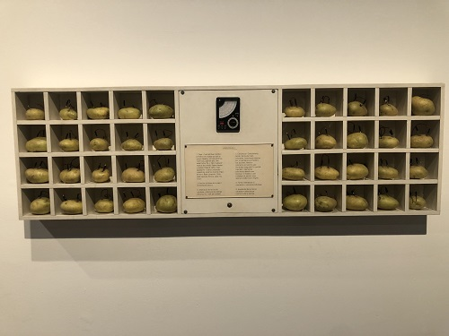

Victor Grippo
1970
Un circuito de papas colocadas en casilleros individuales de un tablero de madera, conectadas entre sí a través de “una pequeña operación electroquímica: introduciéndole dos electrodos, uno de cobre y uno de zinc, a cada papa. Se obtiene así corriente eléctrica de cada una de ellas, las cuales, ligadas entre sí, producen una cantidad de corriente continua sumada, que es medida con un voltímetro para cuantificar exactamente esa corriente en producción”. El mecanismo mide la energía sumada por los tubérculos y constituye una demostración empírica de su capacidad energética. Así dató las distintas materializaciones de la misma (se han rastreado siete), que realizó con ligeras variaciones para diferentes circunstancias: una exposición determinada o bien su inclusión en una colección, como es el caso que aquí nos atañe. Esas materializaciones múltiples van en detrimento del mito de la “originalidad” y la “unicidad” de la obra de arte. Esta historia compleja permite vislumbrar la apuesta crítica de Grippo para quien la obra radicaba claramente en el concepto. En la realización aquí consignada se mantienen las cuarenta celdas divididas en dos sectores de cinco columnas y cuatro filas cada uno. En el centro se ubica el voltímetro, igual que en la primera realización de la obra (seguramente destruida), aunque se agrega el texto titulado “Analogía I” en el que –de nuevo en dos columnas– se contrastan las acepciones de papa y conciencia. Otra de las materializaciones (seguramente la segunda, que también se conserva en el MNBA bajo el inv. 8040, donada por el artista en 1975) es más pequeña aunque la disposición general es la misma: tiene solo 24 casilleros también divididos en dos columnas. Dos realizaciones más de la obra han sido incorporadas a colecciones privadas extranjeras. La Fundación Víctor Grippo de Arte y Cultura conserva por su parte una copia de exhibición, y Nidia Olmos, viuda de Grippo, otra más, esta con el texto y el título en inglés (preparada así para su itinerancia europea), en la que el voltímetro se ubica en el lateral izquierdo y el texto en el derecho.